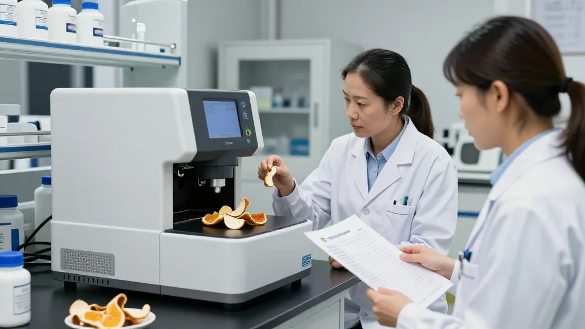
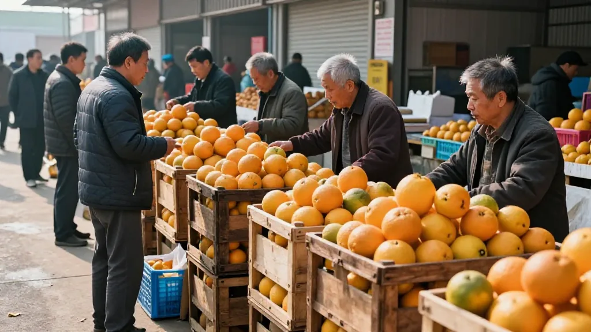

一、陳皮協會成立：行業有了「主心骨」

九月下旬，江門市新會區新會陳皮協會成立大會圓滿舉行，標誌著新會陳皮產業在組織化、規範化發展道路上邁出關鍵一步。
江門市副市長曹陽代表市政府致辭時表示：「新會陳皮是江門農業重要支柱產業之一，擁有全國唯一的陳皮國家現代農業產業園，品牌價值連續多年位居全國前列。2025年全產業鏈價值達283億元，帶動超過8萬名群眾增收就業。」
「協會成立後，將帶領行業嚴守品質底線，凝聚行業發展共識，當好政企橋樑，推動新會陳皮從'土特產'向'精品品牌'深刻轉型。」
業內指出，協會將有利於統一行業標準、規範市場秩序、打擊假冒偽劣，維護道地產區品牌形象。
二、七月份團體標準密集落地，三箭齊發

回顧今年七月，新會陳皮產業在規範化進程中迎來多個標誌性節點，可謂「標準引領、監管護航、數智賦能」三箭齊發。
第一支箭：團體標準體系加速形成。七月九日，《新會陳皮品鑑技術規範》《新會柑無病毒繁育技術規程》《新會柑、新會柑皮和新會陳皮品質要求》《新會柑（陳皮）莊園建設導則》四項團體標準正式發布。七月十八日，《新會陳（柑）皮產地識別方法 X射線螢光光譜法》《新會陳（柑）皮陳化年份鑑定方法》兩項檢測團體標準正式實施，填補新會陳皮產地溯源與年份鑑定的技術標準化空白。
第二支箭：鐵腕執法震懾市場。七月十五日，江門市2026年新會陳皮保護專項銷毀活動在新會區舉行，現場無害化處置涉案罰沒陳皮產品11噸，充分彰顯市區兩級打擊製假售假零容忍、守護地理標誌品牌不懈怠的堅定決心。
第三支箭：全國首個第三方監管倉啟用。七月二十一日，新會區攜手京東物流打造的全國首個陳皮第三方公共監管倉正式落地。依託京東物流全國倉網與智慧數智管控能力，搭配政府官方溯源認證機制，實現入庫檢測、恆溫陳化、全程溯源、遠程監管一體化，杜絕外地皮和科技皮混入。
三、柑季開秤：核心產區與非核心產區價格分化加劇

九月伊始，新會陳皮圈迎來一年中最敏感的議題——柑季開秤價。
據產地資訊，九月頭幾天，核心產區（東甲、梅江等）價格依然堅挺，優質鮮果收購價維持在每斤十元以上的水準；而非核心產區價格已基本見底，一級鮮果約每斤兩元，創近年新低。這種「核心產區硬挺、非核心產區承壓」的分化背後，是市場對道地性與性價比的雙重博弈。
「央視曝光後，2026年被視為陳皮'合規元年'。統一技術標準與檢測設備的缺位問題，正在被團體標準的落地逐步填補，行業從'經驗定價'加速轉向'證據定價'。」
四、消費者觀念升級：成分、性價比成新標尺
消費端的變化正在重塑陳皮市場格局。據多份2026年品牌消費觀察報告，當前消費者呈現三大趨勢：
一看地理標誌與核心產區。越來越多消費者意識到，「新會陳皮」國家地理標誌認證成為選購首要參考。天馬、茶坑、梅江等核心產區因獨特的鹹淡水交匯土壤與精細化種植技術，備受高端市場青睞。
二看成分數據而非年份。橙皮苷、川陳皮素、橘皮素含量成為驗明正身的「成分指紋」。新會陳皮官方國標基準為：橙皮苷≥2.0%、川陳皮素≥0.15%、橘皮素≥0.10%。
三看成分性價比。以總黃酮含量除以每克單價，可粗略估算每元買到的總黃酮量，成分性價比概念逐漸普及。
五、科研與出口升溫：陳皮走向世界
科研方面，五邑大學陳皮學院於今年三月正式揭牌，聚焦陳皮年份鑑定、無損檢測、活性成分提取等產業關鍵技術難題。陳皮博士鄭國棟帶領的科研團隊研究發現，廣陳皮具有護肝作用，相關成果已發表論文及申請專利。
出口方面，江門海關數據顯示，今年一至十月，江門海關監管陳皮及其製品出口530噸，同比增長14%。海關以「一企一策」精準幫扶，並推行「提前申報」「預約通關」等便利措施，助力新會陳皮登上世界餐桌茶席。
常見問題
新會陳皮協會的主要職責是什麼？統一行業標準、規範市場秩序、打擊假冒偽劣、維護道地產區品牌形象，當好政企橋樑，推動產業從「土特產」向「精品品牌」轉型。
團體標準落地後對消費者有何影響？消費者選購陳皮時可參考橙皮苷、川陳皮素、橘皮素等成分指標，這些指標已有國家標準基準作為參照依據。
為何核心產區和非核心產區價格差異這麼大？核心產區獨特的鹹淡水交匯土壤和精細化種植技術，使陳皮油室更飽滿、黃酮和揮發油含量更充分，品質差異直接反映在價格上。
陳皮第三方監管倉如何保證品質？入庫檢測、恆溫陳化、全程溯源、遠程監管一體化，杜絕外地皮和科技皮混入，全程可追溯。